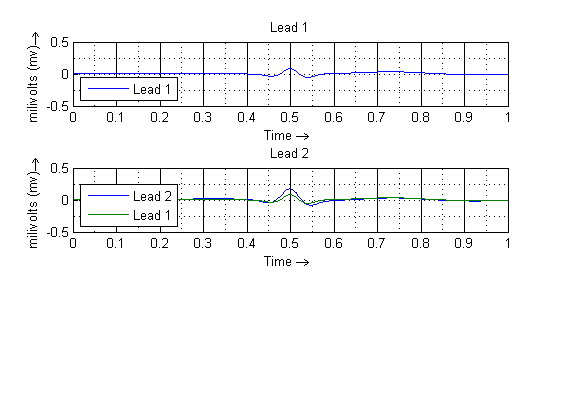
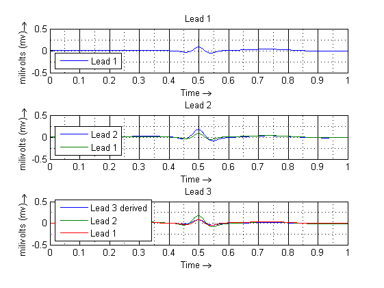
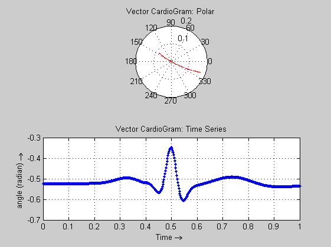

Contents
clear all;
clc;
t0 = 0; tf = 1;
x0 = -0.1; y0 = 0; z0 = 0;
options = odeset('OutputFcn',@odephas3);
datapts = 500;
tspan = [t0:tf/(datapts-1):tf];
global thetai
global heighti
global widthi
configEcgSyn(1);
[T1,Y1] = ode45(@ecgsynSolver, tspan, [x0 y0 z0], options);
configEcgSyn(2);
[T2,Y2] = ode45(@ecgsynSolver, tspan, [x0 y0 z0], options);
subplot(3,1,1);
plot(T1, Y1(:,3));
legend('Lead 1','Location','SouthWest');
xlabel('Time \rightarrow '); ylabel('milivolts (mv) \rightarrow ');
grid on; grid minor; title('Lead 1'); ylim([-0.5 0.5]);
subplot(3,1,2);
plot(T2, Y2(:,3), T1, Y1(:,3));
legend('Lead 2', 'Lead 1','Location','SouthWest');
xlabel('Time \rightarrow '); ylabel('milivolts (mv) \rightarrow ');
grid on; grid minor; title('Lead 2'); ylim([-0.5 0.5]);
Configuring lead 1 - Normal (lesson3:ecg_normal.gif)
Configuring lead 2 - Normal (lesson3:ecg_normal.gif)

calculate Lead 3
T3 = T1;
display 'Derive Lead 3';
subplot(3,1,3);
plot(T2, cos (pi/3 - acos(Y2(:,3)))-0.866, T2, Y2(:,3), T1, Y1(:,3));
legend('Lead 3 derived','Lead 2','Lead 1','Location','SouthWest');
xlabel('Time \rightarrow '); ylabel('milivolts (mv) \rightarrow ');
grid on; grid minor; title('Lead 3'); ylim([-0.5 0.5]);
Derive Lead 3

Vector CardioGram
figure; subplot(2,1,1);
display 'Vector CardioGram: Polar';
polar(pi/3 - acos(Y2(:,3)),Y2(:,3),'--r');
grid on; title('Vector CardioGram: Polar');
subplot(2,1,2);
plot(T2, pi/3 - acos(Y2(:,3)),'.-');
display 'Vector CardioGram: Time Series';
grid on; title('Vector CardioGram: Time Series');
xlabel('Time \rightarrow '); ylabel('angle (radian) \rightarrow ');
Vector CardioGram: Polar
Vector CardioGram: Time Series
